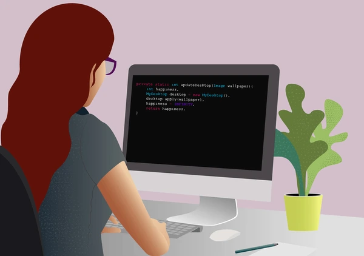
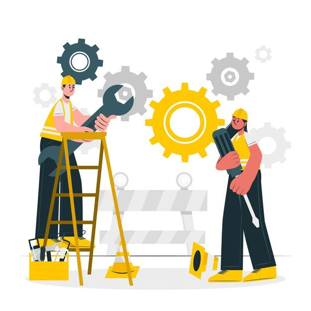

Planning
The first stage of any development life cycle consists of defining the business case for the project and involves input from all members of the team, including stakeholders, project managers and business analysts. Decisions are made regarding high-level project plans, such as establishing rough budgets and timelines. Risks and constraints of the project are also identified to help evaluate the feasibility of the project.

Requirements
Once the goals of the project are defined, the project can move into the requirements stage, where the team work together to work out the specific functionality and features of the project. The product owners take the output from the planning stage, along with defined user stories, to determine both the functional and non-functional requirements, and document the use cases.

Design
During the design stage, developers will make key decisions around the technicalities of the project, taking into consideration all the documentation produced during the planning and requirements stages. Developers and architects will work, alongside UX/UI designers if there is a front-end required, to define the tech stack that'll be used, and how the new product will integrate with existing platforms and services. They will also produce wireframes and architecture diagrams which will ensure that everyone involved in the development stage of the lifecycle are clear on the expected output.

Development
After the design has been clarified, the developers can get started on writing the code and bringing the product to life. Part of this process includes taking the architectural design and breaking it down into distinct, workable tasks. During this stage, developers will also write unit tests to ensure that the code they are writing is functional and meets the requirements set out in the previous stages. Documentation is also created during this stage to ensure that the code is maintainable and understandable for future developers, and so that the business can understand specific limitations of the system.
Testing
Although unit tests are written during the development stage, it is vital that the complete system is tested as a whole before it is released. QA engineers and developers can carry out a range of different tests, such as, performance, security, and end-to-end, to catch bugs and ensure the new product will meet any service level agreements (SLAs - performance and reliability targets agreed with stakeholders) required. It is important that this testing is documented and signed off by senior developers and security managers, so that the business can be assured of the product's quality.
Deployment
Before the product is deployed straight for use by the user, it must be tested in separate environments, each with differing levels of realism. This is to ensure that the product will work as expected in a live environment. Common patterns of deployments are: development -> staging -> production. The product will often be deployed in a dev environment during the build phase for developers to see how the system performs with low quantities of test data. Then, once ready, the deployment can be moved to the stg environment where production-like data is testing on the system. Only once the product has passed the testing requirements for these stages, and been signed off, can it can be deployed to production. Deploying to prod can include a soft launch, where the product is released to a limited audience for further testing before being fully deployed.

Maintenance
Alas, once the product is deployed to production, it will require consistent monitoring and maintenance, as well as continuous improvements to keep the tech up to date and give the product longevity. Performance is often monitored via dashboards, with alerts sent to developers or support teams if there are failures. Depending on the type of system built, there might be an option for user feedback on bugs found or improvements to be made, or perhaps interacting systems will implement breaking changes that impact the new product. Then, developers can once again work to fix and update the system, test and deploy new versions.